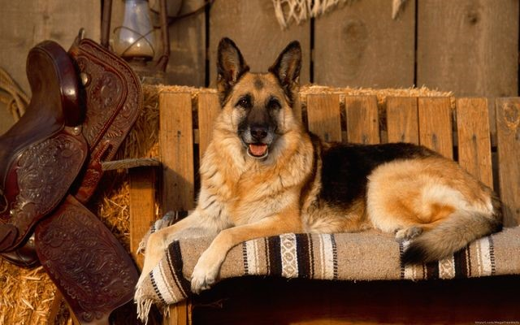
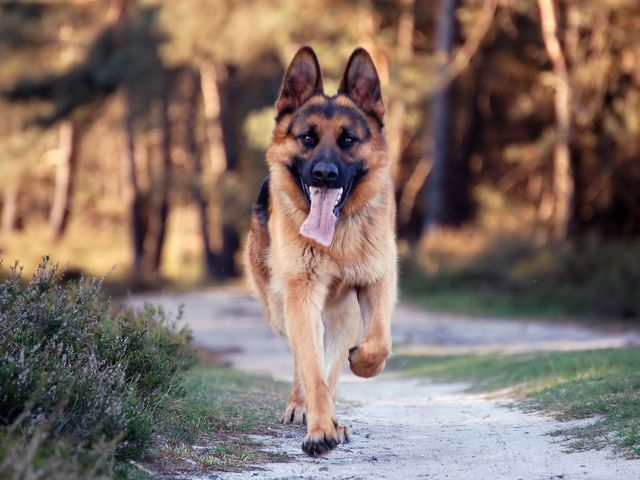
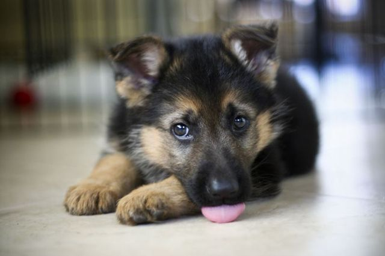

Німецька вівчарка: догляд та типові хвороби.
Зміст статті
Німецька вівчарка - одна з найпопулярніших порід у світі - відрізняється вірністю і відданістю, відвагою і витривалістю, високим інтелектом і здатністю самостійно приймати рішення у відповідальний момент. Вона добре адаптується до стресових ситуацій, а коли господареві загрожує небезпека, стане на його захист, нехай навіть ціною власного життя.
Якщо ви вирішили завести собаку і серед багатьох інших порід зупинилися на «німці», то можете не сумніватися - ваш вихованець стане вам надійним другом, який ніколи не зрадить. Однак перед придбанням цуценя незайвим буде ознайомитися з особливостями виховання, дресурою та іншими нюансами.
Походження породи
Німецька вівчарка, яка вважається національним символом Німеччини, одна з найвідоміших і найдавніших порід. Вважається,
що її предками були північні вовки.
Як окрема порода «німці» з'явилися в кінці XIX століття і заслужили репутацію
чудових охоронців худоби і службово-розшукових псів.
Офіційною датою появи першої справжньої німецької вівчарки вважається квітень 1889-го. Кобель Хоранд фон Графат мав значні розміри, схожі на вовчі, і естетичну зовнішність, а також високі якісні характеристики. Цього ж року пес, який став переможцем виставки в Німеччині, був визнаний прародителем породи. У подальшому в результаті схрещування на світ з'явилися кілька ліній німецьких вівчарок, що повністю відповідали породним якостям.
Стандарт породи
У розведенні породи «німецька вівчарка» діють стандарти, розроблені Емілем Фон Штефаніцем. Якщо коротко описати «німців», то це міцні собаки середнього зросту, які мають потужний і добре розвинений м'язовий корсет.
Вес взрослого кобеля варьируется от 35 до 40 килограммов, высота (в холке) — 60-66 сантиметров. Суки миниатюрнее: вес — 25-32 кг, в холке редко достигают 60 см.
Опис стандарту
- Голова клиноподібної форми, опуклий лоб без борозен. Губи темні, сухі, щільно прилеглі. Спинка носа пряма.
- Щелепи добре розвинені, потужні, з прикусом «ножиці».
- Вуха середнього розміру, прямі, стоячі, з гострими кінчиками, відстань між ними середня. Мочки чорного забарвлення.
- Очі мигдалеподібні, трохи розкосі, невеликі. Райдужка темна.
- Грудина яскраво виражена, довга, помірковано широка. Особлива вимога до стегон: вони не повинні бути потовщеними або бочкоподібними.
- Хвіст довгий, що закінчується на рівні скакальних суглобів, нижня частина вкрита вовною. При русі хвіст трохи
піднімається, в спокійному положенні м'яко звисає і злегка вигнутий.
- Шия міцна, сильна, м'язова, без шкірно-жирового підвісу.
- Спина: добре розвинений, сильний круп відрізняється довжиною, плавно переходить в основу хвоста.
- Передні кінцівки прямі, паралельні одна одній.
- Лапи щільно зібрані, округлої форми, з жорсткими подушками і темними кігтями.
Шкірні покриви щільно прилягають до тіла, не утворять складок. Вовна має підшерстя і буває трьох видів:
- довга, м'яка;
- довга тверда;
- коротка тверда.
Забарвлення може варіюватися від чисто чорного до ослабленого і затемненого зонарного.
Приводом для дискваліфікації служить деформація вух і хвосту, біле забарвлення вовни, світлі очі, надломлені або вуха, що звисають, зайва нервозність, прояви боягузтва або агресії.
Здоров'я, типісні хвороби
В цілому німецькі вівчарки відрізняються хорошим здоров'ям і витривалістю. Найбільш уразливими у породи вважаються зір і опорно-рухова система. У «німців», як і у багатьох представників великих порід, часто діагностується дисплазія кульшових суглобів (рідше — ліктьових), причому цією патологією страждають навіть молоді особини.
Захворювання проявляється в тому, що стегнова кістка погано підігнана до суглобової сумки, що викликає труднощі при ходінні і вставанні, сильні больові відчуття. Проста, своєчасно проведена операція вбереже вівчарку від багатьох страждань у старості, оскільки з віком ця проблема посилюється.
Німецькі вівчарки мають вроджену схильність до наступних
- патології міжхребцевих дисків;
- серцево-судинні порушення (частіше у самців);
- хвороби підшлункової залози;
- цукровий діабет;
Характер
Німецькі вівчарки кмітливі, впевнені, безстрашні і знають межі своєї території. Будь-яка агресія, спрямована в бік господаря або інших членів сім'ї, буде розцінена ними як сигнал до атаки кривдника. Людей, яких вона любить, собака захищатиме до останньої краплі крові. Однак, будучи добре розвиненою фізично, має всі шанси для перемоги над зловмисниками.
Дорослі особини відрізняються спокійним і врівноваженим характером і піддаються дресирування набагато швидше, ніж представники інших службових порід. Невипадково їх активно використовують у армії та поліції. У молодому віці собака може демонструвати непослух і спробу домінувати, проте при правильній дресурі та помірних методах фізичного впливу ці якості можна легко придушити. Пес визнає авторитет господаря і буде повністю йому підкорятися.
Як вибрати цуценя
Німецькі вівчарки — класичний приклад відданості, тому беручи вдома вже дорослого собаку, який мав іншого господаря, не варто розраховувати на її вірність. Надійного друга можна отримати тільки в тому випадку, якщо ви виховуєте цуценя з раннього віку. Придбати малюка слід у розпліднику, де заводчики нададуть на нього всі необхідні документи. Під час огляду цуценя переконайтеся, що у нього:
- вічка не сльозяться;
- крепкие, ровные конечности;
- великі лапки;
- шкіра не має почервонінь;
- вовна гладка, з приємним запахом
Малюк має бути міцним і у віці 1 місяця важити, залежно від статі та кількості цуценят у посліді, 2,5-4 кілограми. Спостерігаючи за тим, як він бігає, можна визначити стан суглобів: при їхньому нормальному стані щеня сильно відштовхується задніми кінцівками і далеко закидає передні. Забирати від мами малютку можна лише у віці 3-4 місяців. Нехай він довше харчується материнським молоком, адже замінити його не зможе ні один корм. Крім того, визначити фізичні та психологічні якості можна не раніше 3 місяців.
